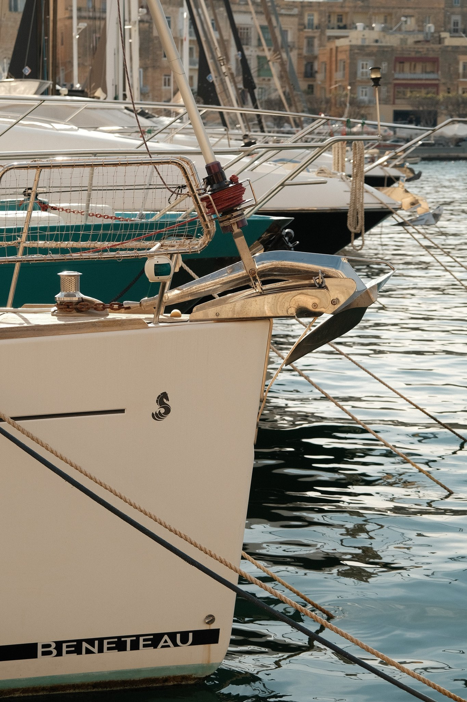
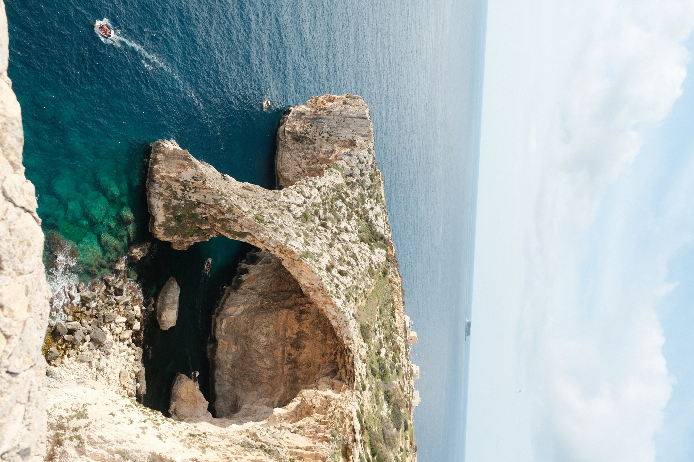
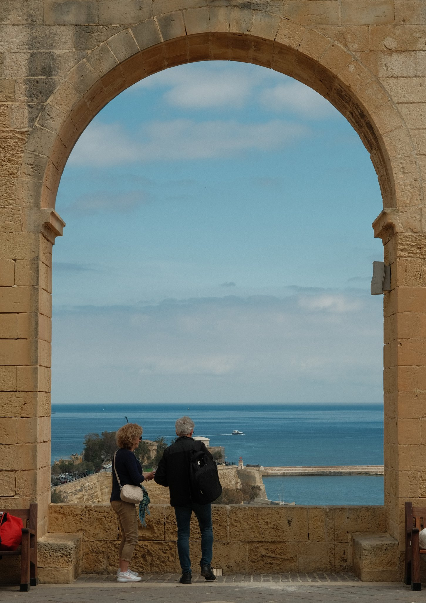
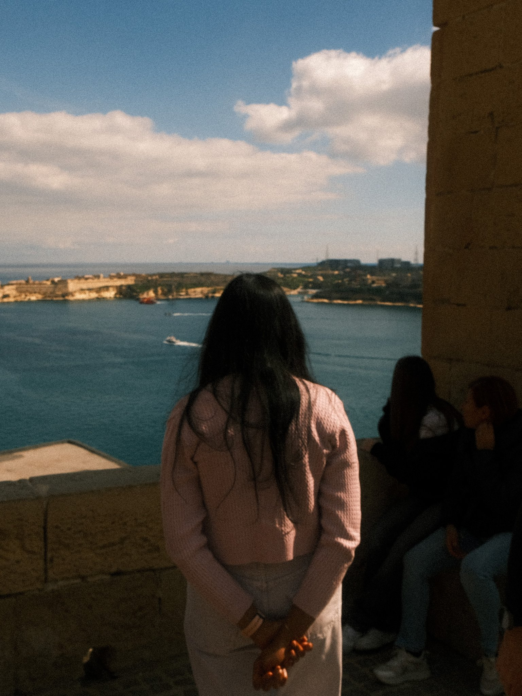
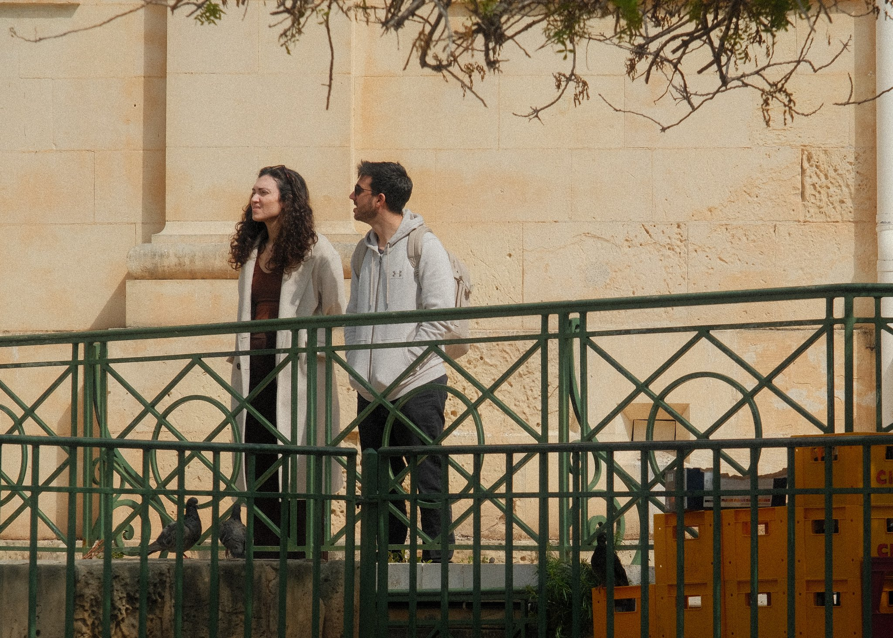
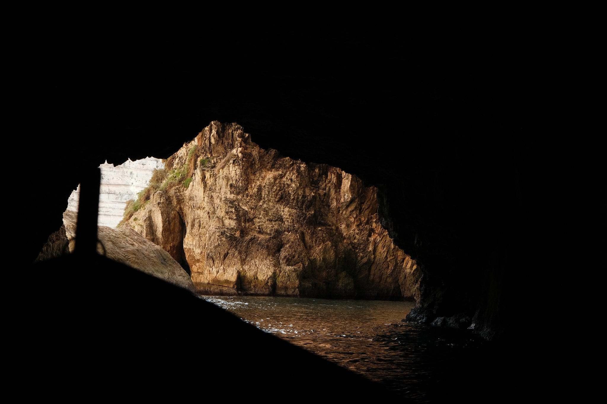
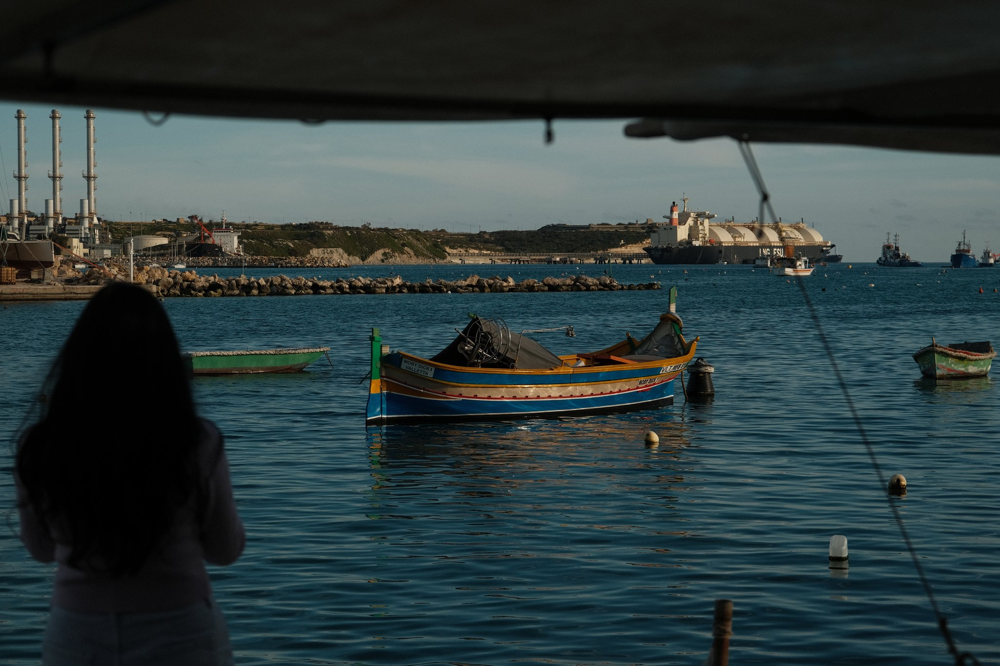

February 2026
Malta
Stone streets and Mediterranean light, revealing quiet details within the city’s layered spaces.







Stone streets and Mediterranean light, revealing quiet details within the city’s layered spaces.






